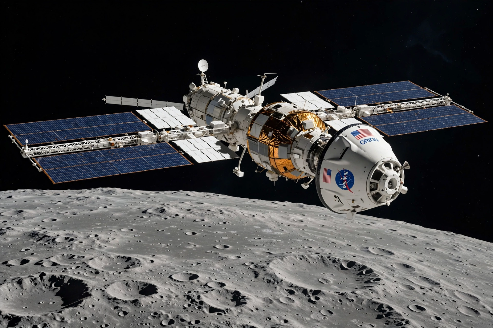

Lunar Gateway
From Wikipedia, the free encyclopedia
| Lunar Gateway | |
|---|---|
| Operator | NASA, ESA, JAXA, CSA, MBRSC |
| Orbit | Near-rectilinear halo orbit (Moon) |
| First elements | PPE and HALO (planned) |
| Status | In development |

Gateway in lunar orbit (artist's concept).The Lunar Gateway, or simply Gateway, is a planned small space station that will orbit the Moon in a near-rectilinear halo orbit, serving as a staging point for the Artemis program's crewed lunar landings and as a platform for deep-space science. It is an international project led by NASA with the European, Japanese, Canadian and Emirati space agencies.
Unlike the International Space Station, Gateway will not be permanently crewed; four astronauts at a time will visit for up to about three months while Orion is docked. Its orbit swings from roughly 1,500 km above the lunar north pole to about 70,000 km out, giving near-constant sunlight and communications with Earth and access to the lunar south pole.
Elements
The first two elements — the Power and Propulsion Element (PPE), a solar-electric propulsion module built by Maxar, and the Habitation and Logistics Outpost (HALO), built by Northrop Grumman from its Cygnus design — are to launch together on a Falcon Heavy rocket. Later additions include ESA's Lunar I-Hab habitat, JAXA life-support systems, the Canadarm3 robotic arm from Canada, and an airlock provided by the United Arab Emirates.
Crewed Artemis missions will rendezvous with Gateway in lunar orbit, transferring to a commercial Human Landing System for descent to the surface. The station's configuration and even its continuation have been debated in US budget discussions, so its final form remains less settled than the ISS's was.
See also
Artemis program · Orion (spacecraft) · International Space Station · Tiangong space station · Falcon Heavy